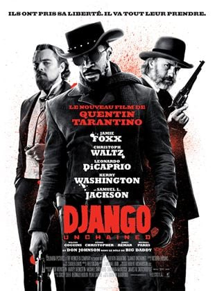

Derniers films
Retrouvez ici les critiques et les analyses des derniers films à succès, ainsi que des classiques du cinéma.
- Django Unchained : Dans le sud des États-Unis, deux ans avant la guerre de Sécession, le Dr King Schultz, un chasseur de primes allemand, fait l’acquisition de Django, un esclave qui peut l’aider à traquer les frères Brittle, les meurtriers qu’il recherche. Schultz promet à Django de lui rendre sa liberté lorsqu’il aura capturé les Brittle – morts ou vifs.
Alors que les deux hommes pistent les dangereux criminels, Django n’oublie pas que son seul but est de retrouver Broomhilda, sa femme, dont il fut séparé à cause du commerce des esclaves…
Lorsque Django et Schultz arrivent dans l’immense plantation du puissant Calvin Candie, ils éveillent les soupçons de Stephen, un esclave qui sert Candie et a toute sa confiance. Le moindre de leurs mouvements est désormais épié par une dangereuse organisation de plus en plus proche… Si Django et Schultz veulent espérer s’enfuir avec Broomhilda, ils vont devoir choisir entre l’indépendance et la solidarité, entre le sacrifice et la survie… - Old Boy (2003) : A la fin des années 80, Oh Dae-Soo, père de famille sans histoire, est enlevé un jour devant chez lui. Séquestré pendant plusieurs années dans une cellule privée, son seul lien avec l'extérieur est une télévision. Par le biais de cette télévision, il apprend le meurtre de sa femme, meurtre dont il est le principal suspect. Au désespoir d'être séquestré sans raison apparente succède alors chez le héros une rage intérieure vengeresse qui lui permet de survivre. Il est relâché 15 ans plus tard, toujours sans explication. Oh Dae-Soo est alors contacté par celui qui semble être le responsable de ses malheurs, qui lui propose de découvrir qui l'a enlevé et pourquoi. Le cauchemar continue pour le héros.
- Le vent se lève :
Inspiré par le fameux concepteur d’avions Giovanni Caproni, Jiro rêve de voler et de dessiner de magnifiques avions. Mais sa mauvaise vue l’empêche de devenir pilote, et il se fait engager dans le département aéronautique d’une importante entreprise d’ingénierie en 1927. Son génie l’impose rapidement comme l’un des plus grands ingénieurs du monde.
Le Vent se lève raconte une grande partie de sa vie et dépeint les événements historiques clés qui ont profondément influencé le cours de son existence, dont le séisme de Kanto en 1923, la Grande Dépression, l’épidémie de tuberculose et l’entrée en guerre du Japon. Jiro connaîtra l’amour avec Nahoko et l’amitié avec son collègue Honjo. Inventeur extraordinaire, il fera entrer l’aviation dans une ère nouvelle.
